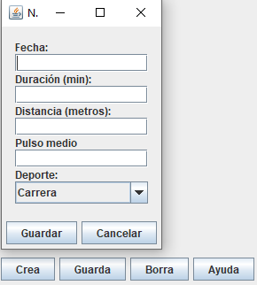
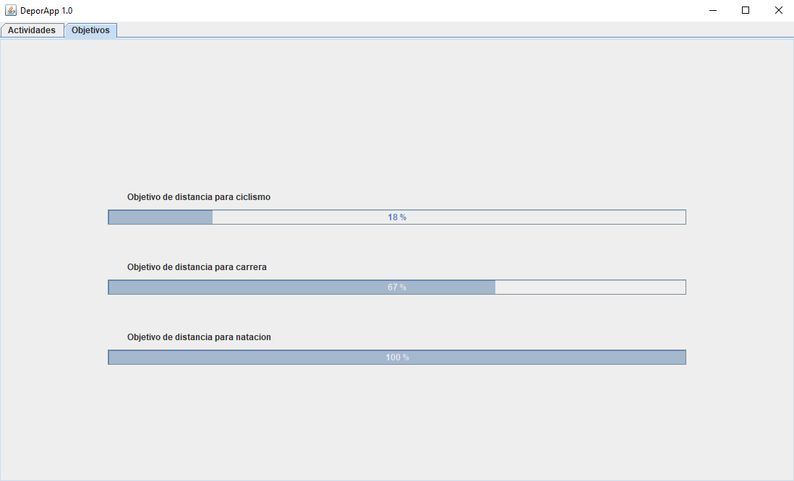

DeporApp es una aplicación que registra los datos de tus salidas deportivas para que puedas ver tus progresos.
Aquí nos muestra una tabla con la información de las actividades que hemos ido guardando. La información que muestra es la siguiente:
A la derecha de la tabla nos muestra las estadísticas totales de las actividades registradas.

Para crear una nueva actividad hay que seguir los siguientes pasos.
Para borrar una actividad por si nos hemos confundido o no la queremos tener registrada hay que hacer lo siguiente:
Vemos unas gráficas con barras que nos muestran el camino que llevamos hacia nuestros distintos objetivos de las tres modalidades de deporte.
El objetivo de ciclismo son 80 km.
El objetivo de carrera son 50 km.
El objetivo de natación son 40 km.
